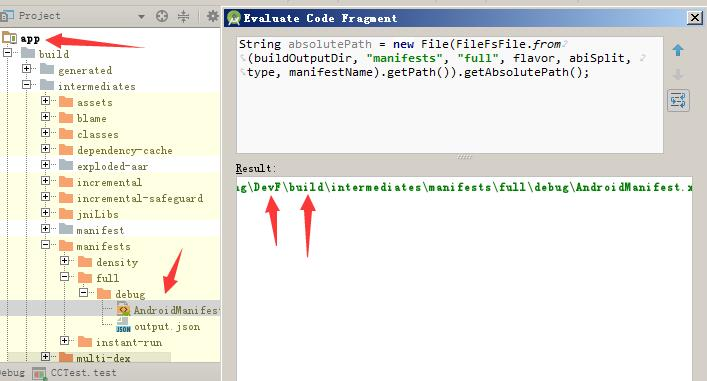
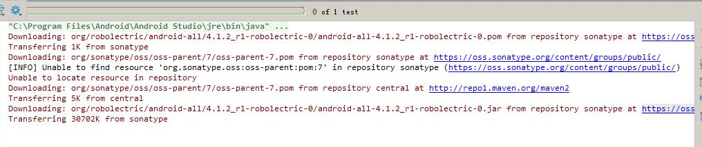

2017-05-26 | Android android, robolectric, test
上一篇Android单元测试文章最后说道要测试Android代码逻辑，光有JUnit和Mockito是不够的，假设你使用了TextView的setText,用Mockito框架的话，默认的TextView的getText方法会返回null,如果是简单的代码，使用Mockito的桩设置还可以接受，如果是要测试到Activity的生命周期等一些复杂逻辑就显得比较复杂了。
为了解决这个问题,诞生了Instrumentation、Robolectric等等的测试框架，不过Instrumentation实际上还是要运行代码到平台上测试，耗费大量的时间，我们今天要介绍的是运行在JVM上的Robolectric测试框架。
PS：本来想找一些参考文章，结果发现网上的文章多半是说一半没有另一半，或者有些可能遇到的问题没有指出。最主要的是官方的文档也是少的可怜，给出的Sample也是旧版本的，完全很多地方都不一样了。
在使用Robolectric之前我们先要明白Robolectric是如何工作的。比如说我们前文说到的TextView，如果我们使用Mockito，他给我们提供的是Mock后的TextView，而Robolectric给我们提供的是ShadowTextView，这个ShadowTextView实现了TextView身上的方法，但他又与Android的运行环境无关，也就是说他可以像使用TextView一样的方法，但不用在平台上运行代码，大大提高测试效率。
使用Robolectric要注意它的版本以及其支持的SDK版本，如果不支持千万不要用高版本SDK编译，或者升级Gradle插件和编译器版本，否则运行时会出现各种问题。如果版本太高，例如我尝试使用Gradle Wrapper版本4.0配合Gradle插件3.0.0版本时发现是无法成功测试的。
本文采用最新的Robolectric 3.x（目前是3.4-rc2），测试的SDK API版本为25，Gradle Wrapper为3.3，Gradle插件为2.3.0。另外我用的Android Studio版本也是3.0版本，如果低于2.0的版本的建议升级，否则可能会遇到其他问题（本文就不在讨论了）。
首先第一步是添加Gradle编译依赖，由于Robolectric本身比较大，所以对于一些功能，它采用add-on的方式，除了核心包其他都是可选添加的，编辑app下的build.gradle文件：
dependencies {
testCompile 'org.robolectric:robolectric:3.+' //核心包
testCompile 'org.robolectric:shadows-support-v4:3.+' //支持Support-v4包
testCompile "org.robolectric:shadows-multidex:3.+" //支持Multidex功能
//...
}
值得注意的是，要使用Robolectric也要添加JUnit依赖，具体可以回顾一下《Android单元测试之JUnit框架》。
还记之前文章说到的JUnit给我们提供一个@RunWith注解去设置测试运行环境吗？Robolectric提供一个RobolectricTestRunner的沙盒测试运行环境，注意低版本的Robolectric可能不是这个类名。这个测试环境使用各种Shadow类代替真正的Android对象，从而实现模拟Android App的运行。所以所有需要使用Robolectric的测试类都要加上类注解：
@RunWith(RobolectricTestRunner.class)
public class ExampleUtilsTest {
//...
}
很多网上的教程都是直接给了一个简单的例子，结果自己运行的时候会发现出现各种问题，所以这里先不给例子，先说一下怎么配置才能正确地运行。
为了方便配置RobolectricTestRunner提供的环境，比如要设置运行的SDK版本，设置包名，自定义Application等等配置，Robolectric提供了一个@Config注解方便用户配置Robolectric。我们可以从源码中看到@Config可以接受很多参数，下面是几个比较常用的:
由于有很多参数，Robolectric为了使用方便提供了很多默认值，通常唯一必须指定的只有constants，因为配置BuildConfig后Robolectric框架会自动完成寻找各种目录和配置包名等等操作。所以需要在使用Robolectric的测试类上加上@Config注解：
@RunWith(RobolectricTestRunner.class)
@Config(constants = BuildConfig.class)
public class ExampleUtilsTest {
//...
}
好了，按照之前说的，配置BuildConfig后就会自动完成寻找各种目录和配置包名等等操作，唯独这个AndroidManifest清单文件可能会寻找不到。
如果你按照其他的教程来操作，很可能运行时就提示:No such manifest file: build\intermediates\bundles\debug\AndroidManifest.xml，无法找到AndroidManifest.xml。我们来分析分析这个问题。首先由于@Config最终是给RobolectricTestRunner使用的，所以我们打开RobolectricTestRunner的源码，可以找到：
protected List<FrameworkMethod> getChildren() {
//...
Config config = getConfig(frameworkMethod.getMethod());
AndroidManifest appManifest = getAppManifest(config);
//...
}
当然我们找到getAppManifest方法发现它采用了ManifestFactory工厂去生产清单文件，找到工厂接口实现类GradleManifestFactory是适合于Android的清单工厂。可以看到里面各种自动寻找目录的逻辑，其中：
String manifestName = config.manifest();
URL manifestUrl = getClass().getClassLoader().getResource(manifestName);
if (manifestUrl != null && manifestUrl.getProtocol().equals("file")) {
manifest = FileFsFile.from(manifestUrl.getPath());
} else if (FileFsFile.from(buildOutputDir, "manifests", "full").exists()) {
manifest = FileFsFile.from(buildOutputDir, "manifests", "full", flavor, abiSplit, type, manifestName);
} else if (FileFsFile.from(buildOutputDir, "manifests", "aapt").exists()) {
// Android gradle plugin 2.2.0+ can put library manifest files inside of "aapt" instead of "full"
manifest = FileFsFile.from(buildOutputDir, "manifests", "aapt", flavor, abiSplit, type, manifestName);
} else {
manifest = FileFsFile.from(buildOutputDir, "bundles", flavor, abiSplit, type, manifestName);
}
这部分代码就是寻找清单文件的代码，为了偷懒，直接下断点，看看生成的路径是否正确：  可以看到获取完整路径后实际上是少了一个模块名称，所以会走到最后的逻辑，从而导致提示报错。比较麻烦的时候，这个工厂我们不能自定义，退而求之我们修改他的前序buildOutputDir参数，这个参数就是对应Config参数buildDir,所以给Config增加一个参数：
@RunWith(RobolectricTestRunner.class)
@Config(constants = BuildConfig.class,
buildDir = "app/build")
public class ExampleUtilsTest {
//...
}
注意相对和绝对路径问题。
下面我们尝试些一个测试例子，创建一个Activity并且验证它非null：
@RunWith(RobolectricTestRunner.class)
@Config(constants = BuildConfig.class,
buildDir = "app/build")
public class ExampleUtilsTest {
@Test
public void testActivity() throws Exception {
MainActivity mainActivity = Robolectric.setupActivity(MainActivity.class);
Assert.assertNotNull(mainActivity);
}
}
这个简单的例子我们先不解析为什么这么写，尝试运行，你可能会遇到以下问题： - AppCompatActivity问题 - MultiDexApplication问题
遇到上述问题请先跳到后面看对应的问题章节，如果你无上述问题，但是运行时一直Download，如下图所示：  这个是Robolectric执行不同SDK版本运行时需要对应运行库，由于服务器本身比较慢，经常超时，有可能一直卡住，如果你足够耐心可以等待其下载完成，如果你没有耐心，可以先跳过，看后面的“Robolectric依赖库问题”。
如果上述问题都处理了，就可以看到运行通过了。接下来我们来正式学习Robolectric的用法。
由于Robolectric的依赖库下载经常超时，我们可以改用手动下载方式去解决，先找到C:\Users\（你的用户名）\.m2\repository\org\robolectric\android-all\目录为需要下载的依赖库位置，可以Maven参考去下载对应版本：http://mvnrepository.com/artifact/org.robolectric/android-all，下载的Jar后先暂停测试进程，然后删除对应的xxx.jar.tmp文件，复制xxx.jar文件进去，重新运行测试即可。
如果你使用的Activity是继承自AppCompatActivity，运行的时候会出现java.lang.IllegalStateException: You need to use a Theme.AppCompat theme (or descendant) with this activity.问题，遇到这个问题只需要把继承AppCompatActivity的主题改为Theme.Appcompat主题或者他的子主题，比如：
<activity
android:name=".MainActivity"
android:theme="@style/Theme.AppCompat.Light">
//....
</activity>
如果你的Application继承自MultiDexApplication就有可能会出现：java.lang.RuntimeException: Multi dex installation failed.，那是因为你没有添加shadows-multidex依赖库，可以参考前文说的，添加：
testCompile "org.robolectric:shadows-multidex:3.+"
上面的例子已经展示了通过Robolectric.setupActivity创建了一个Activity，那么这个setupActivity做了什么呢？下面我们看一下源码，可以看出，实际上setupActivity相当于做了：
Robolectric.buildActivity(MainActivity.class).create().get();
在Robolectric中，Activity的生命周期由ActivityController来控制，使用buildActivity来创建一个ActivityController，通过查看源码可以看到，调用create()方法，实际上顺序调用了performCreate的方法，实际上就是执行了Activity的onCreate方法。而get()则是获取Activity对象。通过查看ActivityController的源码，可以看出他身上的方法和常用Activity的生命周期对应如下：
还有其他比如onRestart等的可以参考源代码找到。
假设有一个MainActivity，上面的btnNext按钮点击后会跳转到NextActivity，我们利用Robolectric来测试这段代码：
//模拟点击跳转
Button btnNext = (Button) mainActivity.findViewById(R.id.btn_next);
btnNext.performClick();
//获取跳转的意图
Intent actual = ShadowApplication.getInstance().getNextStartedActivity();
//期望意图
Intent expected = new Intent(mainActivity, NextActivity.class);
//假设一致
Assert.assertEquals(expected.getComponent(), actual.getComponent());
值得注意的是，如果新版Robolectric使用Assert.assertEquals(expected, actual)来直接对比两个Intent，可能会出现不一致现象。所以只能对比他的组件名，后面会介绍另外一个工具帮助我们快速对比。
Fragment和Activity的测试大同小异，值得注意的是如果使用的兼容包要注意导入，代码如下：
//非V4包写法
BlankFragment blankFragment = Robolectric.buildFragment(BlankFragment.class).get();
//兼容V4包写法
SuppportFragment supportFragment = new SuppportFragment();
SupportFragmentTestUtil.startFragment(supportFragment);//触发Fragment的onCreateView()
非V4包buildFragment产生的也是FragmentController，和Activity的结构大体相似，而V4包的则是FragmentManager，这里不一一分析了。
另外还有测试Service等组件，可以使用对应的buildXxx，比如说使用Robolectric.buildService(Service.class)来获得ServiceController，剩下的逻辑和上述的测试Activity的大体相同。如果不关心生命周期，可以把组件当做普通类使用测试（不建议）。
这个看上去似乎没有什么必要的工作，实际上这里是想说明一种测试思想。
//...
//上面执行了弹出Toast的代码
assertEquals(ShadowToast.getTextOfLatestToast(),"toast content");
这里举这个简单例子是为了简单说明，如果要获取某个类的状态，可以通过其Shadow类来获取，比如AlertDialog可以通过ShadowAlertDialog来获取弹出的AlertDialog等等。这里就不一一说明了。
ShadowApplication.getInstance()和RuntimeEnvironment.application两个Application有什么区别呢？我们分析源码看看ShadowApplication.getInstance()的源码如下：
RuntimeEnvironment.application == null ? null : shadowOf(RuntimeEnvironment.application)
其中shadowOf是把真实模拟的Application变成Shadow对象，可以提供一些原本没有的方法。例如RuntimeEnvironment.application可以使用getString去获取字符串信息，而ShadowApplication.getInstance()不行，但他可以使用getNextStartedActivity获取下一个启动的Activity等方法。
假设有一个对象，你想获取它的Shadow对象，可以使用Shadows.shadowOf，例如上文说到的：
ShadowApplication shadowApplication = Shadows.shadowOf(RuntimeEnvironment.application);
如果是自定义的Shadow对象则使用Shadow.extract方法，别急，马上就说明怎么自定义Shadow对象。
假设有原始类SampleClass，你想要创建他的Shadow对象，并且想修改和扩展它的方法，原始类代码如下：
/**
* 原始类
*/
public class SampleClass {
public String getString(String str){
return str;
}
}
你可以使用Robolectric提供给的@Implements注解说明原始类，使用@Implementation说明该方法为替换原始类中的方法，另外可以随意扩展方法，代码如下：
@Implements(SampleClass.class)
public class ShadowSampleClass {
@Implementation
public String getString(String str){
return "test";
}
/**
* 扩展的方法
*/
public String getStringEx(){
return "test";
}
}
之后你需要@Config下添加shadows参数说明需要使用的Shadow对象，就可以在代码中使用了，运行的时候单元测试中的SampleClass会被替换成ShadowSampleClass，具体代码如下：
@RunWith(RobolectricTestRunner.class)
@Config(constants = BuildConfig.class,
buildDir = "app/build",
shadows = {ShadowSampleClass.class})
public class ExampleUtilsTest {
@Test
public void testShadows() throws Exception {
SampleClass sampleClass = new SampleClass();
String original = sampleClass.getString("123");
Assert.assertEquals("test",original);
//转换出Shadow对象
ShadowSampleClass shadowSampleClass = Shadow.extract(sampleClass);
Assert.assertEquals("test",shadowSampleClass.getStringEx());
}
}
可以发现上述两个assertEquals都是passed的。
Robolectric给我们带来了非常方便的测试，但是它本身存在比较多的坑，而且版本之间差别也非常大，所以这个玩意还需要大家多琢磨琢磨，尤其是在已有项目中集成可是要费一点时间了。好了，还记得上文说到的Intent不能使用Assert直接判断是否相等吗？下篇给大家介绍一个神器来解决这个问题。
Android单元测试之JUnit框架： https://maxwell-nc.github.io/android/junitTest.html
Android单元测试之Mockito框架： https://maxwell-nc.github.io/android/mockitoTest.html
Android单元测试之Robolectric框架： https://maxwell-nc.github.io/android/robolectricTest.html
Android单元测试之AssertJ框架： https://maxwell-nc.github.io/android/assertjTest.html
原创文章，欢迎转载，请保留出处。有任何错误、疑问或者建议，欢迎指出。
请注明文章出自于：https://maxwell-nc.github.io/android/robolectricTest.html